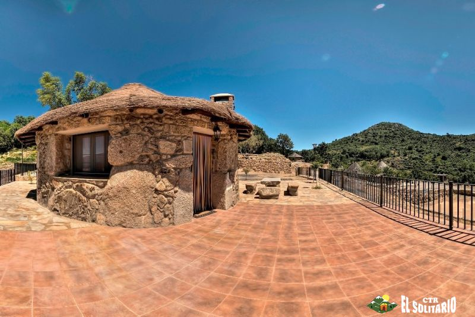
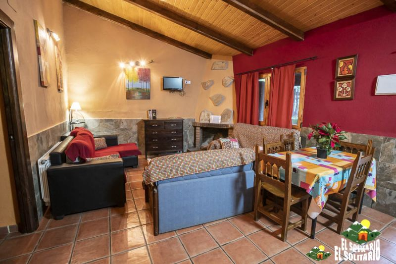
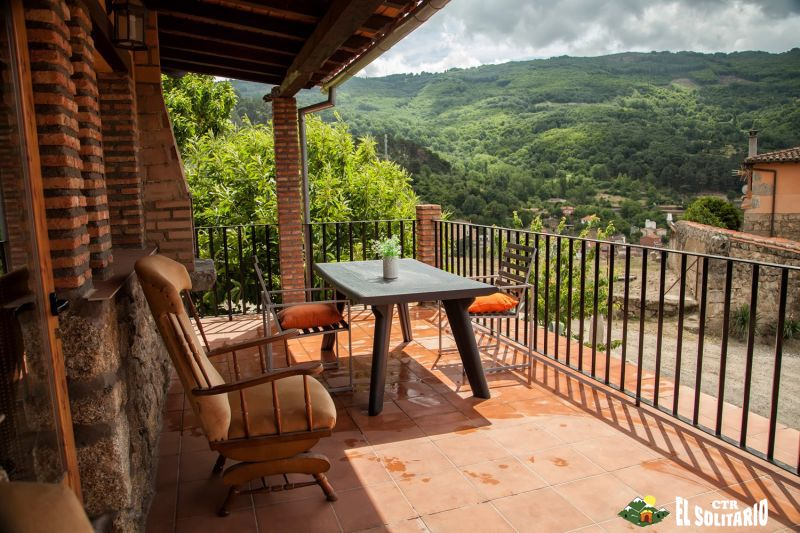
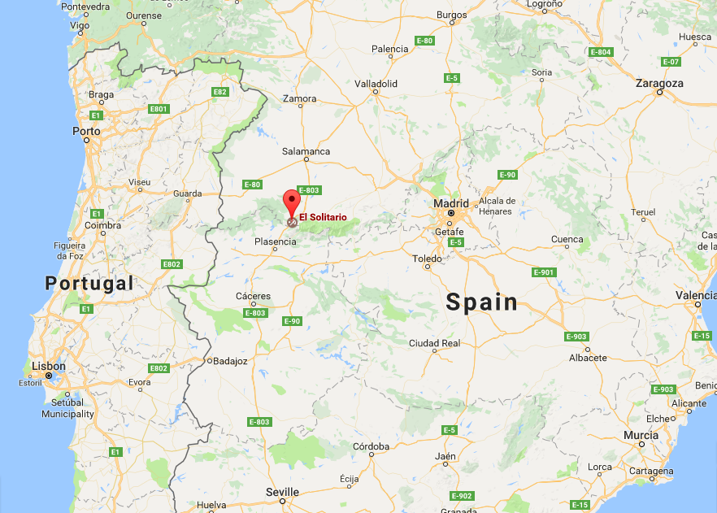
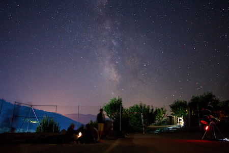
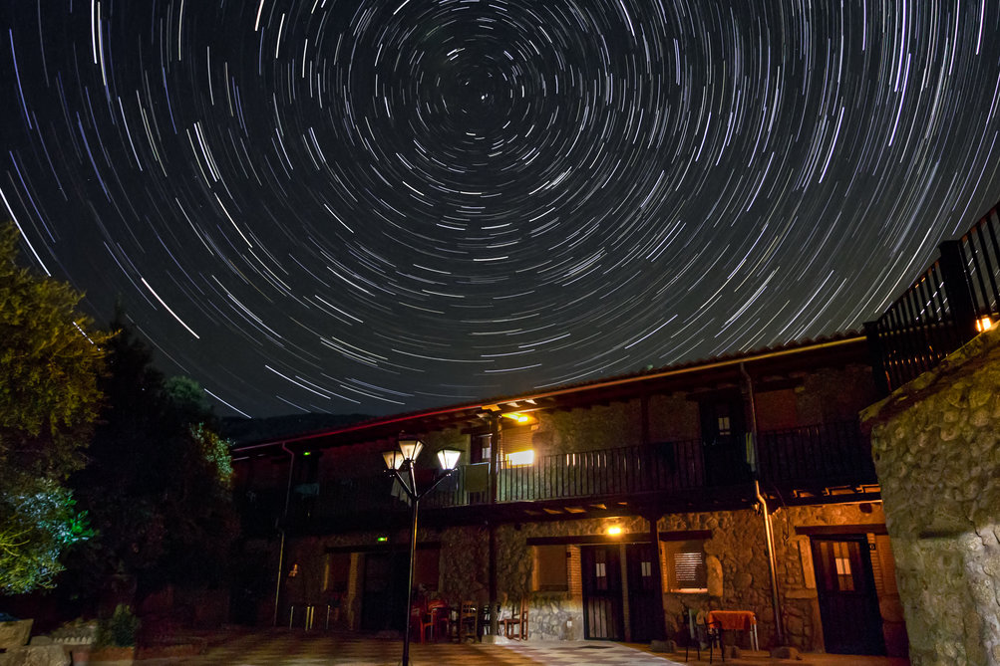
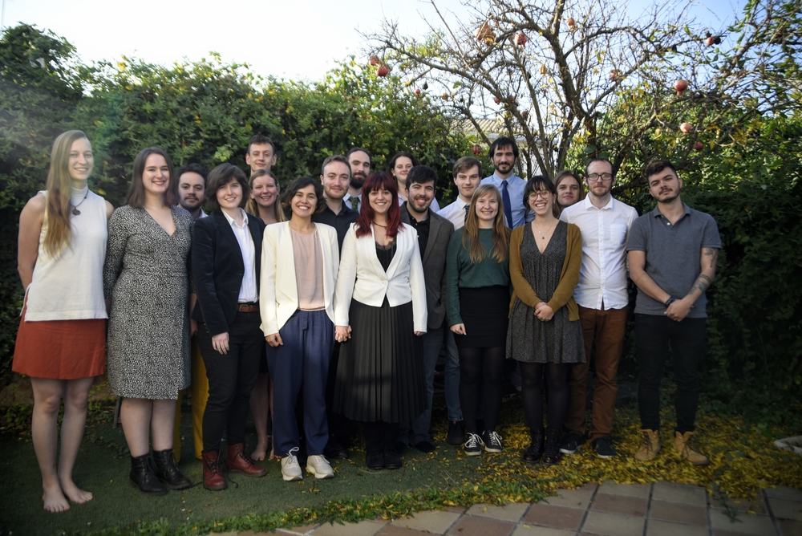

You can download a PDF copy of the first info here
The International Astronomical Youth Camp (IAYC) is a three-week long summer camp aiming to promote knowledge of astronomy and related sciences in a unique international atmosphere. It is organised by an international team of students and young scientists, all members of IWA e.V

More detailed information about the IAYC in general, participants, the daily schedule and observing during the IAYC can be found in the About the IAYC section. We recommend all prospective participants read this section, as well as the First Info, carefully!
About the IAYC 2020
The IAYC 2020 will take place in Spain for the second time in recent years. It will be held at El Solitario, a rural retreat just a few minutes outside of the town of Baños de Montemayor, nestled in the Ambroz Valley in the North of Extremadura. The owners acquired the site in 1982 and created a retreat aimed at rest and relaxation but also an appreciation for nature. The camphouse is well equipped to host us. It has a hostel style dormitory with rooms accommodating 4-12 people, several huts and a row of small houses normally used for family holidays. We use the small houses for our working space. In addition to all of this we have ample space for other activities such as a large indoor hall, storage space and kitchen. There is also a football field, swimming pool, and an out of use bullring which we can use to observe.





Dates
12th July - 1st August (inclusive) The camp runs from Sunday evening on the first day to Saturday morning on the last day.
Camphouse Address
El Solitario,
Ctra. N-630,
Salida 427 A-66,
10750 Baños de Montemayor,
Cáceres,
Spain
Coordinates
- Latitude: 40° 19’ 25.5” N
- Longitude: 5° 51’ 36.5” W
- Altitude: 786 m.
The town of Baños de Montemayor, with a population of around 800, is notable for its authentic Roman baths with therapeutic hot springs originally constructed in the 1st century A.D. It is situated between the cities of Plasencia to the South (43km) and Salamanca to the North (86km). A number of Roman and Medieval ruins can be found in the area.

A few facts about Spain
Area: 505990 km2
Population: 46.7 Million (2018)
Capital: Madrid
Major Cities: Barcelona, Valencia, Seville
Official Language(s): Spanish
Currency: Euro (EUR) €
International Dialling Code: +34 or 0034
Travelling in Europe in general is very safe. You should have no problem finding English speakers, especially in the biggest cities.
Observing


El Solitario is located in an area of very little light pollution. It overlooks the town which gives us a nice view while it is still easy to get away from the light for observing. The conditions should be ideal for observing, which can either take place during working group time as part of your project, or after midnight meal when the telescopes are available for everyone. Catch a glimpse of a celestial object through a telescope or lie down in your sleeping bag and enjoy the view.
It’s no problem if you don’t have any experience observing, the PAL will be there to show you how it’s done and offer support while the leaders and other participants are always happy to help. It doesn’t matter if it’s about constellations, how to use a telescope or how to take astro-pictures. At the beginning of the camp we will offer a telescope introduction to help you get a feel for the basics of how to use a telescope on your own.
Furthermore, there’ll be a photographic darkroom available. This means that you can take black and white (film) photos and develop them yourself. You are also welcome to bring your own telescope or binoculars. We will have several telescopes and CCD cameras suitable for observing and the taking of astro-pictures available to participants.
For further information about our equipment, contact daniel@iayc.org or alejandro@iayc.org.

Participation Eligibility and Fees
To participate in the IAYC you must be 16 to 24 years old (inclusive) at the time of the camp. That means that if you are 14 or younger, you cannot attend the camp this year. If you are 15 currently, you are only eligible for the camp if you will turn 16 during the camp. You are still eligible for the camp if you turn 25 during the camp. Please do not contact us to request exceptions to these rules.
The participation fee for applications is 870 EUR. This deadline for applications is the midnight (23:59 Central European Time) 5th of April 2020.
We are no longer able to consider late applications due to high demand for places. Applicants will be notified about the outcome of their application at the end of April/early May. If accepted, you will need to transfer the participation fee within 7 days of receiving the acceptance e-mail.
You can withdraw your application at any time before we receive the participation fee. If you wish to drop out after that, and we can fill your place, we will refund you the full participation fee less an administration fee. This administration fee is 50 EUR if you drop out before the 27th of June and 100 EUR if you do it afterwards (27th of June included). In the unlikely event that we can’t fill your place the participation fee is non-refundable.
Grants
If financial reasons keep you from applying, you can seek support from our limited grant program. You can download the grant form as part of the regular application process.
This year we are pleased to offer a number of special grants for German citizens and residents, provided by the Wilhelm and Else Heraeus Foundation. You can read more about this here.
Or if you are Slovenian there may be opportunities via the Astronomical Association Kmica, please have a look at their Facebook page.
We strongly encourage you to also contact other organisations, to increase your chance of finding funding. Consider your country’s national astronomical society (e.g. Royal Astronomical Society, European Physical Society) or charitable agencies (e.g. Polish Children’s Fund) that support young people doing research. Your school, university or workplace may also fund extra-curricular activities. If you can think of other ways or organisations that could financially support your attendance, please do not hesitate to explore them, as unfortunately our grant program is limited and we are unable to fund everyone.
In order to apply for a grant, you need to fill in both the normal application and the grant application (grant applications will only be accepted together with the normal application, i.e. you cannot apply for a grant after you have already been accepted to attend the camp).
The deadline for sending in a grant application is the same as for regular applications. Be aware that we will ask you to participate in a short (10 minute) Skype interview if you are being considered for a grant.


Diversity
Celebrating diversity is deeply embedded in the culture of the camp. We are dedicated to making the camp accessible to all, and especially welcome applications from those belonging to minority groups. If you require time away from the schedule for prayers, or if you have any questions about accessibility please do not hesitate to let us know.
You can also read our policy on diversity here.
Choosing your working group
In the following section you can find the abstracts of the working groups offered at the IAYC 2020. In the online application you will need to indicate which working groups you want to participate in. In addition to the working group overviews, the Practical Astronomy Leader, Non-Astronomical Programme leader and the General Coordinator will also introduce themselves.
EPIC - Evi's Planet Investigators & Co.
Tags: Data Analysis, Observing, Programming, Planets, Spectroscopy
Have you ever wondered how many planets exist outside of our solar system? And what elements these exoplanets are made of, or if they could harbour life? Have you ever been amazed by our ability to detect these small objects orbiting a star several light years away? If the answer is yes to any of these questions, you are going to enjoy my working group!
In EPIC we are going to look at different aspects of planets — from detecting exoplanets ourselves to studying the theory of planet formation — there are many exciting projects waiting for you! While some might be analysing the data which led to the award of the Physics Nobel Prize in 2019, others in the group might look at spectra of exoplanets, finding clouds in their atmospheres, or discussing what signatures could give away the presence of extraterrestrial life. Whether you’re an exoplanet expert or need help telling Mercury from Mars, everyone will have an EPIC time!
As you can see, the only requirement for this working group is a love for planets and I will provide the rest (along with tea, coffee, biscuits, cookies, etc.)! If you have any questions about the projects or an idea which we could include, I would love to hear from you!
Clear skies and see you soon in Spain, it’s going to be EPIC!
Evi

I had the chance to meet Evi in 2016 and, let me assure you, she’s one of the most charming people at camp. Originally from Austria, she’s coming back to the IAYC to be a leader for the 3rd time. This time, she’s coming from the UK, where she finished her Masters (at Cambridge, no less!) and is currently doing her PhD. You’ll often find her behind her camera taking a sneaky picture that, every time, turns out to be great. If you end up in this lovely Austrian’s working group, aren’t you the LUCKY one? Because OH MY! You are in for an EPIC time. If you get the opportunity, just approach her, share a mandarine, and have a nice chat (topics might include the work she is doing on exoplanets in her PhD!), you won’t regret it.
EPOCH - Early Physics Outlined with Code and Happiness
Tags: theoretical, research, programming, physics, cosmology
It would be nearly impossible to study astrophysics without thinking about time. When astronomers make observations of the Universe, they often say we are “looking back in time”. When we run simulations, we want to investigate how a system evolves over time. Astronomers – and your average human – are deeply interested in what the future holds for us and for our Universe. In this working group, we will be looking /backwards/, a crucial step in understanding our present state and beyond.
Early Universe physics includes some of the most strange physical, chemical, and cosmological environments. Each project team will research a moment in time after the Big Bang. The epoch of Big Bang Nucleosynthesis – when the first elements form – only endures for a mere three minutes. The epoch of recombination and decoupling, at 270,000 years, marks the surface of last photon scattering and the birth of the cosmic microwave background. The dark ages – and the following epoch of reionization – are a mysterious point in cosmic history when the first structures start to arise. Finally, there is strong evidence suggesting a peculiar period of exponential inflation in the Universe’s size. Together, we will investigate each of these puzzle pieces that fit together to result in the Universe we live in today.
This working group will be theoretical* and programming-based. If learning about weird physics, using code to make predictions, or simply stretching your mind sounds intriguing to you, then join us in EPOCH, or shoot me an email at melanie@iayc.org to discuss ideas. See you in Spain!
*unless we can rally the funds for a particle accelerator. If you can do that, I’d like to point out, IAYC is accepting donations to our PayPal.
Melanie

This wonderful, sunny person is Mel! You’ll easily find her at camp hanging out at the pool or lighting up every room with her smile. This camp will be her 6th camp, the 4th as a leader. Mel grew up in California and after finishing her triple bachelors at UC Berkeley she is now doing a PhD at the University of Illinois Urbana Champaign. Her group uses the South Pole Telescope to look for distant dusty galaxies in the submm and she’ll be going to Antarctica next year! Make sure you don’t miss the opportunity to talk to Mel, because apart from being an amazing scientist, she is also a great listener and someone who always has advice at hand. In EPOCH you’re guaranteed to have an amazing time!
FLAT - FLirting with Absurd Theories
Tags: Programming, Theoretical, Practical, Conspiracies, Debunking
More often than not we take for granted theories that have been proven long before we had a chance to learn about them. Since ancient Greece, we have known not only that the Earth is round but also its radius with surprising accuracy, thanks to polymaths like Eratosthenes. However, it’s easy to be skeptical when it comes to topics that are hard to prove empirically. That’s where most conspiracy theories are born.
In FLAT we will learn about not only conspiracies but also theories that have been disproved by our more modern tools. Programming a simulation of the geocentric model or theorizing about how gravity would make a flat disc collapse into a sphere are some of the things we will work on. But we’ll also get rid of our computing power and try to recreate some of the measurements that our ancestors got so accurately. Together we’ll figure out whether they put a man on the Moon or R.E.M. is lying to us.
Personally, I always chuckle when I stumble upon a crazy theory and find amusement in pushing the theory forward until it’s too absurd too handle; if that sounds appealing to you, in FLAT you’ll feel at home. I can’t wait to meet you all in Spain, hopefully we can help each other with the disappointing amount of questions that the Area 51 Raid left us with.
See you soon,
Gabi

This is Gabi, and believe me, you’d be very lucky if you were to end up in his working group! Gabi first joined the IAYC in 2016, his kindness always makes you feel welcome, and when something isn’t working out, his humour will cheer you up. Gabi has graduated with a degree in Engineering from Madrid. Aside from all of this and being an amazing second time leader, this Espanish guy is incredibly good at solving a Rubik’s cube - ask him about his grand collection of cubes or challenge him to a Rubik’s cube solving competition! Either way before you know it you’ll already be friends with Gabi, joining the IAYC community in spreading the word that oh boy, he sure does love astronomy!
MESSY - Modelling Energy Systems SustainablY on exoplanets
Tags: Energy, Colonisation, Design, Modelling
Do you like lights? How about heat? Or rockets, electronics, the internet, cars, trains, planes, food, hospitals or sanitation? All of those things need energy to be created and to run, and a colony on another planet would need to do all of those things too! How would their energy system work? Would it copy Earth? Or would they use a new system altogether?
In MESSY, we’ll pick an exoplanet from a catalogue and use what’s known about it to design an energy system for a future human colony there. We’ll learn the basics of modelling. We’ll guess what future human civilisations will want energy for and propose how they might obtain it. Is there nuclear fuel on the planet? Do they need to worry about greenhouse gas emissions in their atmospheres? We’ll consider dozens of questions like this together, and see how the system we’re designing compares to Earth!
For a bit of practical application, we can build a wind turbine (or any other generation device – be creative) and measure its power output!
If you like planning, designing and creating things, MESSY is for you. We’ll combine existing knowledge with creativity to tell the story of the future of humanity’s energy as an interstellar species! We’ll also play endless games, drink our weight in tea, and discuss every topic imaginable.
Finnbar

Who’s this brilliant Irishman? After a two year IAYC hiatus, Finnbar is making his leader debut! It’s not like he’s been bored though - finishing his Masters and serving as the CTO of an energy company filled his head with new crazy ideas. If you have played the table game or the box game, you already have had a taste of what a camp with Finnbar can be like. You’ll immediately fall in love with this cheerful man, with his particular sense of humor, interesting talks, and his huge amount of knowledge about things such as climate change,creative writing or bananas. If you end up in his working group you’ll have the experience of your life, that’s for sure!
OOPSIE - Observing and Photographing Skies In Extremadura
Tags: Astrophotography, Observation, Telescopes, Cameras
Astronomy is an ancient science, since the beginning of time we humans have raised our eyes to the sky and wondered what was lying out there. We pictured it as a solid dome with bright dots stuck to it, or imagined it being the home of mythological creatures surveying the skies. Only 400 years ago these questions began to be resolved thanks to a powerful time machine: the telescope. A tool that let us observe objects our eyes could not see because they were too dim or too far away. Later another revolution came, the camera, allowing us not only to observe objects in a blink but to capture the photons they emit for minutes or even hours – suddenly the sky was bright and full of treasures.
And that’s exactly what we will work on in OOPSIE: we will observe, catalog and photograph the skies at night. We’ll use big aperture telescopes to observe nebulae, galaxies and star clusters with our own eyes; telescopes with great focal length to note the changes in Jupiter’s clouds and moons; cameras to take long exposure photographs of deep-sky objects, planets, the Moon or just photos of the beautiful landscapes surrounding the camp house with the Milky Way rising.
If you are willing to spend countless nights observing and photographing the sky, this is the working group for you. I’ll make sure you have a constant supply of coffee, tea and cookies to keep you warm and happy. And if not, OOPSIE.
See you at El Solitario!
Alex

What has a telescope, a rock hammer and tattoos? It’s not a bad joke, it’s the friendliest Spaniard at camp (and that title is hotly contested). Alex’s first camp as WG leader was in 2016, and since then he’s been a huge factor in helping everyone in his working groups to fall in love with camp. This renaissance-man knows a bit about everything space-related; in the daytime he studies geology (apparently astrophysics wasn’t cool enough for him), builds rockets, 3-d prints models and makes laughter. At night he uses his super-professional astrophotography setup to take amaaazing photos of the vaults of heaven. Ask him about cameras or telescopes, about new breakthroughs in the space industry, or about sci-fi and the future of humanity. And maybe bring a notebook- this guy knows a lot! With four camps as a leader under his belt, Alex has the skills, the knowledge, and the charm to make your camp experience extra special!
SCOUSE: Science COmmunication of the UniverSe and Everything
Tags: astrophysics, social science, presentation skills, media, communication, theoretical, practical
Astronomy is an infinite source of awe and mystery. Yet, astrophysicists aren’t always the best communicators; research in its original form is filled with complex equations and unintelligible text — near-impossible for members of the public 👪 to understand. As scientists, it’s our responsibility to help bridge the gap between science and the public, and make science accessible to all.
Join me on this journey as we delve into the deepest and darkest secrets of the Universe. We’ll read astrophysics research papers 📖; learn how to translate complex scientific jargon; communicate in a variety of ways: writing 📝, presenting 🖥️, podcasting 🎙️, vlogging 📹, (interpretive dance?), … We’ll also relive the good old days, when science journalists took analog photos 📷 and developed film 🎞️ in the darkroom to document their work.
But there’s more to science communication than just communicating. If we want communities at large to be more engaged in science, we need to take things to the next level — we need to evaluate. Did people understand what we’ve communicated? What was our impact? Were some techniques better than others? How can we improve?
If it ever gets too much and fake news 📰 and the FLAT-earthers start bringing us down, do not fear. I’ll be here providing tea & biscuits, and emotional support for when the going gets tough and the camp gets going.
I hope you’ll be here with me too,
P.S. I may even try and do a Scouse accent if you’re lucky.
Hannah

Hannah’s first camp was in 2011 - some of you weren’t even in high school back then! She is a citizen of the world, having lived in more countries than most people have been on holiday to. Her doctoral research is taking her on a tour around the globular clusters in the Milky Way and beyond, but her true passion is in sharing astronomy with the world. Join SCOUSE and you’ll be learning from the best - Hannah has worked in the press office at the European Southern Observatory, spoken at sci-comm conferences, will be speaking at the Royal Institution in London, runs her own website, and oh, just got a paper published in Nature Astronomy. ‘nuff said? Perhaps most importantly, Hannah has impeccable taste in music (have you heard of Musigh?). It’s time to broaden your horizons and join her group!
STORYTIME – STars On the Radiant skY Truly Inspired Mythology on Earth
Tags: cultural astronomy, mythology, archaeoastronomy, research
Have you ever gazed at the night sky and felt your heart skip a beat in awe of its beauty? Or how small you felt underneath the firmament?
Now imagine our ancestors hundreds and thousands of years ago staring at the same stars and the awe they must have felt. They weaved the stars into stories about their gods, built temples and structures according to the path of the Sun or the Moon. But stars did not only play an important role in religion and stories told around the fireplace, but also in navigation and for calendars.
In STORYTIME we will compare different cultures from all over the world in terms of their relationship to astronomy and how their myths and legends are linked to the stars we know. I am sure you know about ancient Greek mythology, but what about the legends of the Aborigines or Inca?
Get ready to travel through time to the early beginnings of astronomy, starting with the Nebra sky disk, the oldest concrete depiction of the night sky, and astronomical structures like Stonehenge. What can they tell us about how life and astronomy were connected?
We will take a closer look at how astronomy developed in cultures all over the world and how people started to use the stars to find their way through a strange world. Who knows, maybe you will even get the chance to build ancient navigational instruments on your own?
I can promise you that we’ll spend hours underneath the stars, discussing stories of old times, eating cookies and drinking tea and I will do my best to make sure you have a great time at the IAYC. I can’t wait to finally get to know you all in El Solitario!
Wanda

Wanda is one of the most unique and genuinely kind people you will have the joy of meeting at IAYC. This leader hails from Germany, and her first camp took place in 2015. It will be her second year as a leader and she is sure to explore topics you won’t find in any other working group. She is pursuing a double bachelors in biology and physics and is especially interested in sustainable living. Her talents go beyond the scientific realm as well. She’s an avid volleyball and ultimate frisbee player, and she enjoys artistic outlets, too. You can find her walking barefoot through nearby nature or headbanging at a metal party: she is relaxed in any environment and so easy to get to know!
T-REX - Training Robots to EXplore
Does space fill you with Curiosity? Are you interested in the Spirit of space exploration, and the Opportunity that it brings? Unfortunately the puns stop there because NASA didn’t care to give the rest of their space probes more convenient names.
In T-REX we will learn all about robotic space exploration using planetary rovers. Rovers are awesome. Using them we’re able to analyse the soil on Mars, sniff the toxic atmosphere of Venus and even take photos from the surface of comets (yes, I know Philae was a lander). Although rovers often carry different payloads depending on the mission (spectrometers, lasers, drills, etc), virtually every system has a bunch of cameras to give us eyes on an alien world. We can use images to navigate, reconstruct 3D models of terrain, identify interesting geology and help the rover avoid obstacles. Plus, of course, we can take pretty panoramas.
Let’s build one and explore El Solitario! But what will we actually do, I hear you ask? How about:
- Planning a robotic mission, making trade offs to achieve science goals when SWAP (Size, Weight and Power) are against you?
- Mapping an environment in 3D, localising the rover in the environment and overlaying sensor data?
- Using computer vision/machine learning to locate, classify and analyse objects in images
- Understanding how we control systems that are very far from Earth
This is a great opportunity to get involved with hardware hacking, computer vision and machine learning. We will be using Python for pretty much everything. Don’t be afraid if you know nothing (Jon Snow), you will learn!
#!/usr/bin/env python
import random
benefits = ['caffeine', 'food', 'good music', 'Josh', 'memes', 'robots']
print("Don't worry, there will be {} to keep you going!").format(random.choice(benefits))
Josh

Josh is the coolest dino on the block. His first camp was back in 2009, then he became a leader in 2011, and luckily for us, he is back for his 9th camp! But why is he so cool, I hear you ask? Well, let me tell you about his research. Josh combines machine learning, drones, and infrared astronomy to do animal conservation; so far this has led him to Madagascar (for the lemurs) and Kenya (for the rhinos 🦏). Not only this, but Josh has also been working with the European Space Agency, using machine learning to detect floods around the world — his code might even end up on a satellite! If that’s not cool, then I don’t know what is (apart from Antarctica ❄️). So be sure to choose Dr. Josh as your leader if you want to learn everything there is to know about coding, electronics, astro-ecology, flooding, or even, what the IAYC was like in the prehistoric ages. 🦕
NAP - Non-Astronomical Programme
Welcome to NAP! I am your director of in camp entertainment so allow me to introduce you to the wonderful madness of NAP. The Non-Astronomical Programme is at the heart of the IAYC.
After lunch the camp comes together to enjoy a period of something completely different.
The NAP is a wide and varied programme that brings the camp together to run around a field playing the games you haven’t played since you were a child. It’s pure unadulterated fun.
But it’s not all silliness; we also learn about each other’s cultures, appreciate poetry and performances, and bond as a group.
As NAP leader I will be in charge of the chaos that is NAP sessions, but I will also be the GEN’s right hand in the day-to-day running of the camp. While Cillian is dealing with the big things I will be making sure everyone is awake with time to make it to breakfast by singing you awake, and I will be on hand throughout the day to keep you supplied with all the materials you require for your projects.
There’s no formula for NAP. I will try to spark some creativity, and watch the beautiful chaos that you come up with (and keep a hold on the reigns).
Every member of the IAYC is automatically inducted into NAP, so I will see you at IAYC 2020!
Carys

Fancy learning a bit about calligraphy? Or perhaps musicals are more your cup of tea? No? How about jujitsu? Well then do I have the leader for you! Meet Carys, ever since she came along and brightened our camp with her rays of positivity in 2014, Carys has been a permanent fixture at the IAYC. Her warm welcome will make you all feel right at home and before you know it, you’ll wonder how you ever got by without her in your life.
PAL
Tags: Night observations, Telescopes, Technical help
Picture the scene. It’s 1 am, you’ve just finished a delicious midnight meal and you walk outside. It’s 20 degrees and not a cloud in the sky, you look up and see the majesty of the Milky Way stretching from horizon to horizon overhead. You rush to the observation field, hoping to glean a better view of the night sky through one of the many telescopes available to you at the IAYC. You arrive, however, to find the battery pack is out of charge, the eyepiece missing and you’re not entirely sure how to operate this particular telescope. Well, have no fear, your PAL is here!
My job is to ensure the smooth running of any and all observing at the camp. Whether your leader has set you a fascinating observing project and you need help acquiring the data, you’re wanting a bit of help finding NGC 6871 or perhaps you just want someone to point out the latest constellations to you. Whatever your observing needs I’ve got you covered! As the artists of the legendary Friends theme song once sung, “I’ll be there for you”, especially, “when the rain starts to fall” as we’ll need to get the telescopes inside pretty quickly…
In addition to helping out on the observation field itself, I’ll be delivering daily weather reports, organising star parties, running astrophotography workshops, and as my day job when I’m not being PAL is as a observational astronomer, maybe hosting a couple of lectures on the state-of-the-art professional observatories and how they compare to our setups.
That’s not all. Have you ever wanted to try your hand at the lost art of film photography? At the IAYC we will also have a darkroom. I’ll be on hand to help you take your own photos, develop the film and make prints to take home with you, the perfect way to capture the memories of those hot summer days you spent under the Spanish Sun.
See you in Spain,
Dan

Hey, who dug up this dinosaur in Yorkshire? Wait, nevermind, it’s just Dan. Hailing from the United Kingdom, Dan is a veteran of the IAYC in every sense. He first joined us in 2012 and first became a leader in 2015! Coming back for his 5th run as a leader many of you will already know all about this guy, and the rest of you soon will. Dan is one of the most expert observers in the whole IAYC, he was made to be PAL! Be sure to ask him all about his favourite ways to see the moon and his famous mosaic picture of it. If he somehow tires of talking about the moon be assured he can still talk at length about past IAYC stories, his collection of fountain pens, and so much more. In case you weren’t impressed yet he is also doing his PhD at Cambridge, helping to build a future observatory. Don’t miss your chance to get to know Dan at this year’s camp, he’s one of the nicest people you’ll meet!
GEN - General Coordinator
So you’re wondering what the General Coordinator of the IAYC does eh? Fair enough, it’s easy to miss how much work goes on behind the scenes to make sure camp runs smoothly and everyone has a great time.
As the GEN it’s my job to make sure everything is working right from start to finish. You need transport to and from the camp? Let me get you a bus. You need hot food and all the tea and coffee you can lay your hands on when we get up at midday? I’ll be constantly keeping up with the staff of the house to keep us fed and watered. You can’t fit enough clothes for 3 weeks of camp into your suitcase (for some reason)? I’ll see to it that we can do at least some laundry during the camp, just don’t count on weekly washes.
Aside from the day to day running of the camp it’s also my job to handle any problems that come up. Water not running, the heating/cooling is broken, your leader is missing/sick, and anything else you can think of. It’s up to me to deal with issues as they arise so that you don’t have to, and find solutions that keep things feeling seamless and smooth.
Not even the legendary squawkers of El Solitario or pool induced nightmares will keep me from delivering daily announcements and safeguarding your camp experience against all misfortune.
At the camp, I am your first port of call if you have any issues and I’m always happy to help so please come knock on my office door any time. Just remember to ask your common sense if you can deal with it first since there is a camp to run after all.
Can’t wait to see you all in El Solitario.
Cillian

Introducing the Viking. Cillian’s first camp was in 2015 and he became a part of the leaderteam in 2018. He has a masters degree in space science and technology and is currently working at ESA as a National Trainee working on the GAIA spacecraft calibrations team. He also has a black belt in ninjutsu. We call him the Viking because of his excellent beard (and his part as an extra on the show Vikings) but don’t let his rugged exterior fool you, he’s kind, always willing to listen, and help with your problems. The role of GEN is a heavy mantle but I have no doubt he will wear it well.
Applying to the Camp
IAYC 2020 has been cancelled. The online application system is now closed.
If you want to participate in the IAYC 2020, fill in the online application and sign the consent form . If you are not yet 18 (21 in some countries) your legal guardian (usually a parent) has to sign the form as well. Please do not forget to attach a recent picture to your profile.
Make sure you have read the terms and conditions on the consent form carefully. Please note that you are obliged to have health insurance, which is valid in Spain, for the duration of the camp. If we decide to accept your application you will need to send a copy of your insurance certificate to us (e.g. travel insurance certificate, European Health Insurance Card, etc.).
You must be able to attend the entire camp, from the first Sunday evening to the last Saturday morning. We do not make exceptions to this rule. The IAYC experience is not like a summer school or conference with ‘optional’ sessions. The beginning and end of the camp are amongst the most important both for project work/report writing and for bonding with your fellow participants. We want all our participants to enjoy the full camp experience!
Travel to the IAYC
Please note that we cannot make travel arrangements for individual participants. Travel to and from the camp is the sole responsibility of the participant. However, upon acceptance you will receive a link to the Second Info brochure. It will contain more detailed information on how to travel to the camp. Additionally, you will be put in contact with the other participants attending the IAYC 2020. This will enable you to communicate with other participants and arrange travel to the camp together. A bus service will be provided from Madrid to the camp house and back again afterwards. More details will be available after acceptance.
Any questions?
If you have any questions that have not been answered by this page, then we have an information service, info@iayc.org, that you can email. We will try to reply to you within a couple of days - usually it’s sooner!
Before emailing info, please make sure you have read the First Info thoroughly. Please also read the FAQ which answers some of the more common questions that you might have.
We are looking forward to receiving your application and to seeing you in El Solitario, clear skies from all of us,
IAYC 2020 Leaderteam: Alex, Carys, Cillian, Dan, Evi, Finnbar, Gabi, Hannah, Josh, Mel, & Wanda.

IWA members December 2019
Back row, left to right: Josh, Melanie, Finnbar, James, Cillian (General Coordinator IAYC 2020), Hannah, Dan, Aitor (IWA Data protection officer), Mike (IWA President).
Front row, left to right: Wanda, Carys, Nikki (IAYC Info Service), Eli (IWA Treasurer), Irati, Gabi, Evi, Mara (IWA Vice President), Javi (IWA Social Media), Alex (IWA Deputy Treasurer)